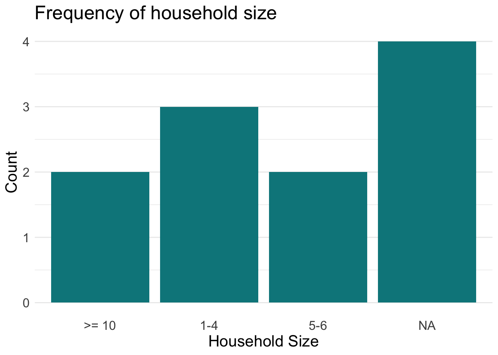
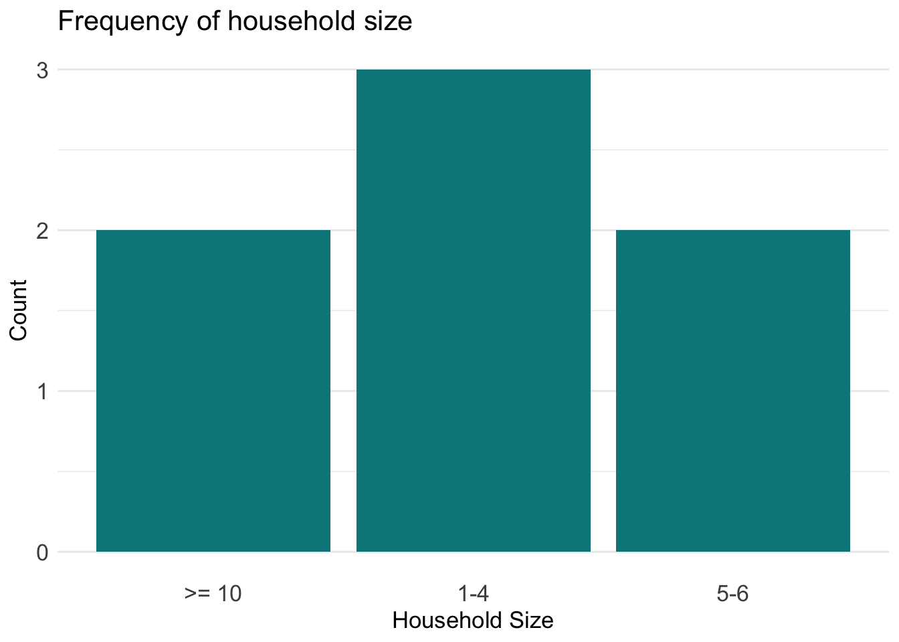
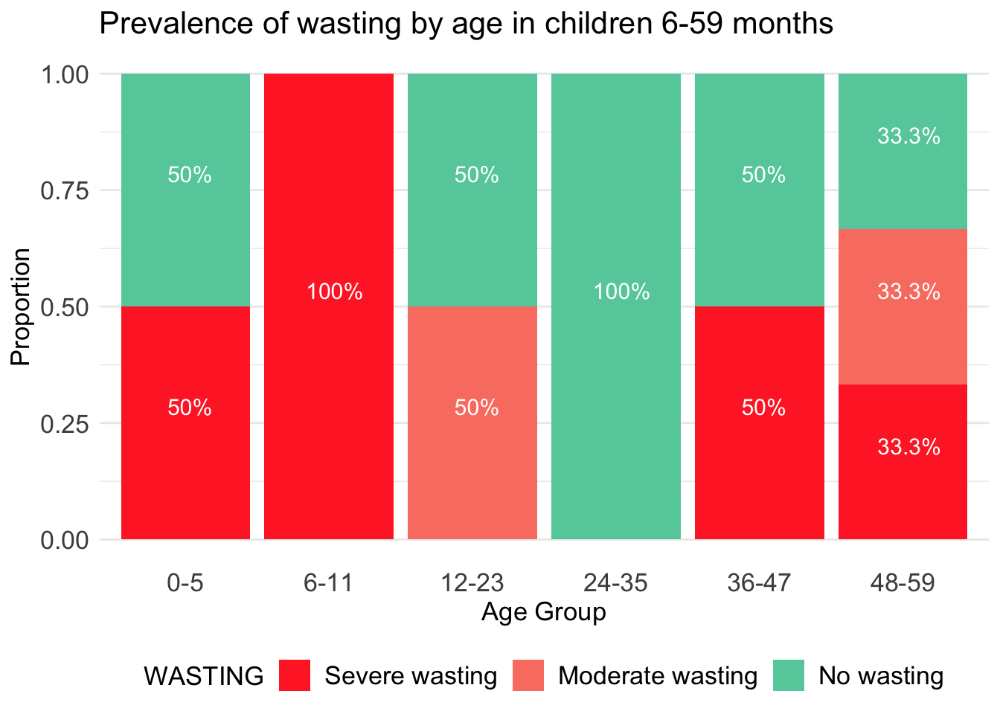

#To install the packages used in this guide, uncomment and run the lines below.
#install.packages(haven) # For importing SPSS files into R
#install.packages(janitor) # For cleaning/housekeeping datasets
#install.packages(dplyr) # For wrangling and summarising datasets
#install.packages(tidyr) # For reshaping datasets
#install.packages(ggplot2) # For plotting and visualization
#install.packages(questionr) # For easy frequency and descrptive tables
#install.packages(forcats) # For working with 'factor' or categorical data
#install.packages(kableExtra) # For formatting pretty tables
library(haven)
library(janitor)
library(dplyr)
library(tidyr)
library(questionr)
library(ggplot2)
library(forcats)
library(kableExtra)Sample Data Analysis
For a Survey Solutions SENS survey
Introduction
The Standardised Expanded Nutrition Survey (SENS) is a health and nutrition survey by the United Nation’s High Commission for Refugees (UNHCR), aimed at improving nutrition among refugee populations by gathering quality data to develop timely policies and interventions.
Survey Solutions is a free software developed by the World Bank for designing and managing surveys, censuses and data collection activities. It supports many modes of collection such as CAPI, CAWI and mixed-modes.
This document provides a brief guide to preparing SENS data for data analysis when the data-source is Survey Solutions. It assumes that the reader is familiar with Survey Solutions and has implemented (or will implement) a SENS activity using the standard Survey Solutions SENS template (will be linked when public).
The statistical software that will be used in this guide is R, an open-source language for graphical and statistical computing. All examples and code will be written in R, with the assistance of some key packages. All code was developed and tested using the R version 4.1.1. Please ensure that your local R installation is version 4 or higher.
Note: In its current form, this guide assumes no particular survey design and thus includes no design elements such as survey weights, strata, clusters, etc. However, the survey R package may be used in order to define and incorporate these elements into the analysis.
In addition, this guide will make heavy use of the Tidyverse, which is a set of packages and style-guidelines for data analysis in R. The two main Tidyverse packages used in this guide are dplyr, for data wrangling, and ggplot2, for plots and graphs. The ‘R Code: Preparation’ section contains more information about these and other R packages used in this guide.
Structure of Exported Data
The first step is exporting and downloading the survey data from Survey Solutions. The details of exporting data will not be discussed here but documentation can be found in the official Survey Solutions documentation site.
The image below displays all survey and system-generated files that are extracted from the Survey Solutions export.

For this guide, the files have been exported and downloaded in SPSS format. The main survey files are:
- sens.sav - the base file containing household-level elements. The modules included at this level are
- Demography (M. 1)
- Food Security (M. 5)
- Mosquito Net (M. 6)
- WASH (M. 7)
- HHMEMBERS.sav - the individual-level file containing individual-level elements. These include child and woman questionnaire data and modules:
- Anthropometry & Health (M. 2) - Child and Woman
- Anaemia (M. 3) - Child and Woman
- IYCF (m. 4) - Child.
- BEDNETS.sav - information on bed nets from the Mosquito Nets module.
- WATERCONTAINERS.sav - information on household water storage containers from the WASH module.
Additionally, some automatically generated metadata files are included. For information on these system-generated Survey Solutions files, please refer to the official documentation.
Preprocessing
Installing and loading packages
Several very useful R packages will be used in this guide. These should be installed (if not done so already) and then loaded.
Importing, merging and preparing survey files
It is assumed that you have downloaded and extracted the SENS survey files into a folder called SENS_FILES in your local working directory. These files can now be worked with. What follows in this subsection is some basic preparation of the survey data to facilitate further analysis.
# 1. import files from local directory, save as R data frames
sens_hh <- read_sav('./SENS_FILES/sens.sav')
sens_ind <- read_sav('./SENS_FILES/HHMEMBERS.sav')
# 2. merge household and individual level data frames
sens_df <- left_join(sens_hh, sens_ind, by = 'interview__key')In the above code, two things take place:
- The survey base/household-level file and the individual-level file are imported using the
read_savfunction from thehavenpackaged and saved in R objects as data frames. - The household and individual level data frames are merged*, using
dplyr’sleft_joinfunction, into a single data frame namedsens_df.- The joining variable is interview__key, which is a key generated by Survey Solutions to uniquely identify interview cases. In this particular context, the interview__key is unique at the household level, meaning that each survey household can be distinctly identified by its interview__key. This key is present in all survey files (and other exported files), making it a convenient merging variable. Individuals from the sens_ind roster will be merged with the household file, creating a dataset that contains all surveyed individuals along with household-level data.
*For more information on merges and joins with dplyr, see here.
Below, we create some important derived variables that will be used throughout the analysis.
# 1. add household-size categorical variable
sens_hh <- mutate(sens_hh,
HHSIZE_CAT = case_when(
HHSIZE <= 4 ~ '1-4',
HHSIZE <= 6 ~ '5-6',
HHSIZE <= 9 ~ '7-9',
HHSIZE >= 10 ~ '>= 10')
)
# 2. Create AGEGROUP variable in the individual-level data frame
# 2a. define the age group labels at 5 year intervals
groupLabels <- c(
paste(seq(0, 90, by = 5), seq(0 + 5 - 1, 95 - 1, by = 5), sep = "-"),
paste('95+')
)
# 2b. create the AGEGROUP variable by 5 year intervals and apply group labels
sens_df$AGEGROUP <- cut(sens_df$HHMAGE, breaks = c(seq(0, 95, by = 5), Inf),
labels = groupLabels,
right = FALSE)
# 2c. ensure correct ordering of the age group 'levels'
sens_df$AGEGROUP <- fct_relevel(sens_df$AGEGROUP,
'0-4',
'5-9')
# 3. create CHILD age group variables using a different and, for
# this purpose, more convenient approach
sens_df <- mutate(sens_df,
CHAGEGROUP = case_when(
MONTHSX %in% 48:59 ~ '48-59',
MONTHSX %in% 36:47 ~ '36-47',
MONTHSX %in% 24:35 ~ '24-35',
MONTHSX %in% 12:23 ~ '12-23',
MONTHSX %in% 6:11 ~ '6-11',
MONTHSX %in% 0:5 ~ '0-5')
)
sens_df$CHAGEGROUP <- fct_relevel(sens_df$CHAGEGROUP,
'0-5',
'6-11')
# 4. create a recoded SEX variable
sens_df$SEX <- ifelse(sens_df$HHMSEX == 1, 'Male', 'Female')In the code above, we have derived the following important variables:
- A derived categorical variable of household size.
- A derived categorical (ordered) variable of individual age groups, in intervals of 5 years.
- A derived categorical (ordered) variable of child age groups, in varying month intervals.
- A recoded SEX variable using text labels.
Housekeeping and Preliminary Exploratory Analysis
The SENS documentation recommends reviewing the completeness and integrity of some key variables. Below, we run frequency checks on the three main consent variables.
# Frequency on overall HOUSEHOLD consent variable
freq(sens_hh['MDCCONST']) n % val%
[1] Yes 7 63.6 63.6
[2] No 2 18.2 18.2
[3] Absent 2 18.2 18.2
[-999999999] missing 0 0.0 0.0# Frequency on overall CHILD consent variable
freq(sens_ind['CHCONST']) n % val%
[1] Yes 17 38.6 94.4
[2] No 1 2.3 5.6
[-999999999] missing 0 0.0 0.0
NA 26 59.1 NA# Frequency on overall WOMAN consent variable
freq(sens_ind['WMCONST']) n % val%
[1] Yes 7 15.9 63.6
[2] No 2 4.5 18.2
[8] Absent 2 4.5 18.2
[-999999999] missing 0 0.0 0.0
NA 33 75.0 NAAnalysing the output of the above frequencies, we can observe a few peculiarities worth mentioning:
System-missing data - These data are coded as NA by R. These are data that are missing because the software determines that they are not applicable. For example all questions that are disabled in Survey Solutions are questions that should not be asked and thus the data is missing.
User-missing data - These data are coded as -999999999 by Survey Solutions. These are data intentionally or unintentionally left blank by the data-capturer. Survey Solutions codes these as -999999999 with the label ‘missing’. These correspond to questions which the software determined that they should have been asked, but no response was recorded.
- Some users might want to code user-missing data under the same category as options such as “Don’t know” or “Not applicable”. This depends on the particular analysis plan.
Other labelled data - We can observe that for other valid data, Survey Solutions produces values and labels, which is very useful during analysis.
Further investigation into the structure and content of the exported data can and should be done in order to become familiar with the dataset and to gain some intuition on how the data looks after being (I) created by Survey Solutions, (II) exported by Survey Solutions in SPSS format, and (III) imported into R using the Haven package.
The output below, which uses dplyr’s glimpse function, shows the first 30 variables of the SENS dataset. The output displays the variables going horizontally, the data type beside each variable, and a few of the data values.
# We select a subset of the columns of the SENS dataset to "explore"
sens_subset <- select(sens_df, 1:30)
glimpse(sens_subset) Rows: 48
Columns: 30
$ interview__key <chr> "09-12-74-59", "60-26-84-57", "12-79-20-21", "94-09-2…
$ interview__id.x <chr> "39281449ec2d413082bb9792a80f53e5", "31e2a24e0da64d83…
$ CAMPNAME <chr> "Belize Camp 2A", "Belize 3A", "Belize Camp 3A", "Bel…
$ SECTION <chr> "009", "900", "567", "609", "609", "609", "001", "001…
$ ZONE <dbl+lbl> 2, 6, 2, 2, 2, 2, 2, 2, 2, 2, 2, 2, 2, 2, 2, 2, 2…
$ BLOCK <dbl+lbl> 1, 6, 3, 4, 4, 4, 2, 2, 2, 2, 2, 2, 2, 2, 2, 2, 2…
$ CLUSTER <dbl+lbl> 4, 2, 2, 43, 43, 43, 2, 1, 1, 1, 1, 1, …
$ HH <chr> "2", "3", "33", "82", "82", "82", "4", "10", "10", "1…
$ SURVDAT <chr> "2022-04-30T10:50:40", "2022-04-30T10:51:49", "2022-0…
$ COUNTRY <dbl+lbl> 84, 84, 84, 84, 84, 84, 84, 84, 84, 84, 84, 84, 8…
$ IYCF <dbl+lbl> NA, NA, NA, NA, NA, NA, 1, 1, 1, 1, 1, 1, …
$ MDCCONST <dbl+lbl> 2, 3, 3, 1, 1, 1, 2, 1, 1, 1, 1, 1, 1, 1, 1, 1, 1…
$ GPSCONST <dbl+lbl> NA, NA, NA, 1, 1, 1, NA, 2, 2, 2, 2, 2, …
$ HHGPS__Latitude <dbl+lbl> NA, NA, NA, 17.06893, 17.06893,…
$ HHGPS__Longitude <dbl+lbl> NA, NA, NA, -89.13822, -89.1…
$ HHGPS__Accuracy <dbl+lbl> NA, NA, NA, 16.791, 16.791, 16.791, …
$ HHGPS__Altitude <dbl+lbl> NA, NA, NA, 109.3, 109.3, 109.3, NA, …
$ HHGPS__Timestamp <chr> "", "", "", "2022-04-30T17:01:33", "2022-04-30T17:01:…
$ HHHSEX <dbl+lbl> NA, NA, NA, 2, 2, 2, NA, 1, 1, 1, 1, 1, …
$ HHHAGE <dbl+lbl> NA, NA, NA, 25, 25, 25, NA, 47, 47, 47, 47, 47, 4…
$ HHHCTRY <dbl+lbl> NA, NA, NA, 320, 320, 320, NA, 222, 222, 222,…
$ HHHHOST <dbl+lbl> NA, NA, NA, 2, 2, 2, NA, 2, 2, 2, 2, 2, …
$ HHHDIP <dbl+lbl> NA, NA, NA, NA, NA, NA, NA, NA, NA, NA, NA, NA, N…
$ HHHREFUG <dbl+lbl> NA, NA, NA, 1, 1, 1, NA, 1, 1, 1, 1, 1, …
$ NAME__0 <chr> "", "", "", "Gianni", "Gianni", "Gianni", "", "Rudy",…
$ NAME__1 <chr> "", "", "", "Elvira", "Elvira", "Elvira", "", "Serge"…
$ NAME__2 <chr> "", "", "", "Antonio", "Antonio", "Antonio", "", "Mar…
$ NAME__3 <chr> "", "", "", "##N/A##", "##N/A##", "##N/A##", "", "kam…
$ NAME__4 <chr> "", "", "", "##N/A##", "##N/A##", "##N/A##", "", "Hug…
$ NAME__5 <chr> "", "", "", "##N/A##", "##N/A##", "##N/A##", "", "Fri…Finally, we run a basic histogram below to get a sense of the age data on household members (HHMAGE). This can be useful for detecting possible outliers and for observing general trends.
ggplot(sens_df, aes(x = HHMAGE)) +
geom_histogram(fill = 'turquoise4') +
scale_x_continuous(labels = seq(0, 95, 5), breaks = seq(0, 95, 5)) `stat_bin()` using `bins = 30`. Pick better value with `binwidth`.Warning: Removed 4 rows containing non-finite values (stat_bin).
Aesthetics
The code below is simply for formatting the aesthetics of the output in the rest of this guide. A few functions and objects that help us format tables and plots are created. All plots will be created using the ggplot2 package. it is not important to understand the below code, but for more information on colors and theming in R and ggplot2, please see here.
# 1. function that formats a data frame using the {kableExtra} package
formattedTable <- function(df, capt){
df |>
kbl(caption = capt) |>
kable_styling(font_size = 14, full_width = F,
bootstrap_options = c("hover", "condensed"))
}
# 2. function that formats a decimal value into a percent value
formatPercent <- function(x){
paste0(round(x, 2) * 100, '%')
}
# 3. theme colors for plots
primaryColor <- 'turquoise4'
secondaryColor <- 'wheat3'
# 4. ggplot2 theme object for styling plots
plotTheme <- theme_minimal() +
theme(
panel.grid.minor.x = element_blank(),
panel.grid.major.x = element_blank(),
text = element_text(size = 16),
legend.position = 'bottom',
title = element_text(size = 13)
)
# 5. An overlay of percent-label text on some plots
applyPercentLabels <- geom_text(
aes(y=..count../tapply(..count.., ..x.. ,sum)[..x..],
label=paste0(round((..count../tapply(..count.., ..x.. ,sum)[..x..]),
3) * 100, '%')),
size = 4,
color = 'white',
stat="count",
position=position_fill(0.5),
vjust=-0.5,
hjust = 0.4)Module 1: Demography
Household Response
Response rates are calculated from the consent (MDCCONST) variable. The function freq from the questionr package is used to produce easy frequency tables with labelled values.
The result is displayed with the help of our formattedTable function.
# 1. derive frequencies
response_freq <- freq(sens_hh["MDCCONST"])
# 2. output the results in a formatted table
formattedTable(response_freq, 'Household Consent')| n | % | val% | |
|---|---|---|---|
| [1] Yes | 7 | 63.6 | 63.6 |
| [2] No | 2 | 18.2 | 18.2 |
| [3] Absent | 2 | 18.2 | 18.2 |
| [-999999999] missing | 0 | 0.0 | 0.0 |
Household Totals
We can also display some aggregated summaries of the surveyed population. We will call these ‘Household Totals’ and they are derived by aggregating and summing the demographic summary variables available from the Demography module. We recall that these variables were automatically calculated by Survey Solutions for each interviewed household.
# 1. summarise survey data on household totals
survey_totals <- summarise(sens_hh,
`Total Surveyed` = sum(HHSIZE, na.rm = T),
`Total U2` = sum(TOTU2, na.rm = T),
`Total U5` = sum(TOTU5, na.rm = T),
`Total 5-14` = sum(TOT514, na.rm = T),
`Total 15-64` = sum(TOT1564, na.rm = T),
`Total 65+` = sum(TOT65OLD, na.rm = T),
`Total Pregnant` = sum(TOTPREG, na.rm = T))
# 2. pivot the table from wide to long format
survey_totals <- pivot_longer(survey_totals,
cols = everything(),
names_to = "Household Totals",
values_to = "Result")
# 3. output the results in a formatted table
formattedTable(survey_totals, 'Household Totals')| Household Totals | Result |
|---|---|
| Total Surveyed | 44 |
| Total U2 | 9 |
| Total U5 | 17 |
| Total 5-14 | 7 |
| Total 15-64 | 20 |
| Total 65+ | 0 |
| Total Pregnant | 6 |
Household Size
Using the questionr package, it is also easy to produce some basic frequency tables, such as household size categories using the HHSIZE_CAT variable created earlier.
hh_sizecat <- questionr::freq(sens_hh$HHSIZE_CAT)
formattedTable(hh_sizecat, 'Household Size')| n | % | val% | |
|---|---|---|---|
| >= 10 | 2 | 18.2 | 28.6 |
| 1-4 | 3 | 27.3 | 42.9 |
| 5-6 | 2 | 18.2 | 28.6 |
| NA | 4 | 36.4 | NA |
For reporting, it might be useful to create some graphs and visuals of demographic data. Below, we use the ggplot2 package to create a simple bar graph of household size frequencies.
For more information on ggplot2 and its syntax, refer to the Data Visualization chapter in R For Data Science (Wickham, 2016).
# only keep valid respondent households
households <- filter(sens_hh, MDCCONST == 1)
# bar chart of household size frequencies
ggplot(data = households, aes(HHSIZE_CAT)) +
geom_bar(fill = primaryColor) +
labs(x = 'Household Size', y = 'Count', title = 'Frequency of household size') +
plotTheme
Population Pyramid
We can also create a typical population pyramid. To do this, we first derive a data frame that groups data by sex and age group. Because of how ggplot2 renders the data, we also make the male population figures negative, so that the male pyramid bars go to side opposite of the female pyramid bars.
Thereafter, a somewhat complex ggplot function call is made to create the pyramid. Essentially, we are modifying a bar graph and applying some tricks to create the pyramid.
# 1. derive age group populations by sex
agegroups <- sens_df |>
filter(!is.na(AGEGROUP), !is.na(SEX)) |>
group_by(SEX, AGEGROUP, CAMPNAME) |>
summarise(POPULATION = n(), .groups = 'drop') |>
mutate(POPULATION = ifelse(SEX == 'Male', POPULATION * -1, POPULATION))
# 2. create population pyramid
mainPyramid <- ggplot(data = agegroups, aes(x = AGEGROUP, y = POPULATION, fill = SEX)) +
geom_bar(stat='identity') +
scale_fill_manual(values=c(primaryColor, secondaryColor)) +
scale_y_continuous(labels = ~ ifelse(.x < 0, .x * -1, .x)) +
coord_flip() +
labs(title = 'Population Pyramid') +
guides(fill = guide_legend(reverse = T)) +
plotTheme
mainPyramid
We could also generate individual population pyramids conditioned on a particular variable - say, CAMPNAME. This can be achieved with ggplot’s facet_wrap function. Although we need a lot more data to truly appreciate this visually, the code and output is demonstrated below:
Module 2: Anthropometry and Health
Counts and Summaries
The Anthropmetry and Health module is the first child-level module, and thus captures some demographic child data. This guide assumes that the IYCF module is included in the SENS survey and therefore the child age range for eligibility is 0-59 months.
In the code and table below, we first calculate the child (0-59 months) response rates.
# 1. summarise data by response based on the MDCCONST variable
# note: modify 'Target' to your local target # for children to sample
chResponse <- sens_df |>
summarise(
Target = 120,
`Total Surveyed` = sum(CHCONST == 1, na.rm = TRUE),
`% of Target` = paste0(round((`Total Surveyed`/Target) * 100,2), '%'),
`Non-Responses` = sum(CHCONST %in% c(2,8), na.rm = TRUE),
`Non-Reponse rate (%)` = paste0(round(sum(CHCONST != 1, na.rm = T)/
sum(!is.na(CHCONST), na.rm = T), 3) * 100, '%')
)
# 2. output the results in a formatted table
formattedTable(chResponse, "Children 0-59 Months")| Target | Total Surveyed | % of Target | Non-Responses | Non-Reponse rate (%) |
|---|---|---|---|---|
| 120 | 17 | 14.17% | 1 | 5.6% |
Next, we can create an age and sex distribution of the surveyed children, including the sex ratio (girl:boy).
# 1. derive frequency table with totals, using the {janitor} package
chAgeSex <- tabyl(dat = sens_df, CHAGEGROUP, SEX, show_na = F) |>
adorn_totals(c('row'))
# 2. add percentage columns, format and rearrange columns
chAgeSex <- chAgeSex |>
mutate(Total = Female + Male,
`%` = formatPercent(Female/Total),
`% ` = formatPercent(Male/Total),
Ratio = round(Female/Male, 2)) |>
select(CHAGEGROUP, `Count` = Female, `%`, `Count ` = Male, `% `, Total, Ratio)
#3. output results to a formatted table, grouping some columns by sex
formattedTable(chAgeSex, 'Child Age and Sex Distribution') |>
add_header_above(c(" " = 1, "Female" = 2, "Male" = 2, " " = 2))| CHAGEGROUP | Count | % | Count | % | Total | Ratio |
|---|---|---|---|---|---|---|
| 0-5 | 3 | 75% | 1 | 25% | 4 | 3 |
| 6-11 | 2 | 67% | 1 | 33% | 3 | 2 |
| 12-23 | 0 | 0% | 2 | 100% | 2 | 0 |
| 24-35 | 0 | 0% | 2 | 100% | 2 | 0 |
| 36-47 | 2 | 67% | 1 | 33% | 3 | 2 |
| 48-59 | 2 | 50% | 2 | 50% | 4 | 1 |
| Total | 9 | 50% | 9 | 50% | 18 | 1 |
Wasting
Wasting is a type of acute malnutrition that is calculated from the weight-for-height or weight-for-length rations in young children. Below, we see a summary proportion bar plot of moderate and severe wasting across age groups. The WFZ (weight-for-N) score was calculated via a real-time function implemented in the Survey Solutions SENS questionnaire, and is available in the exported data. This is the primary variable used in calculating the wasting displayed below.
sens_df$WFZ <- as.double(sens_df$WFZ)
sens_df <- sens_df |>
mutate(
WASTING = case_when(
WFZ >= -2 ~ 'No wasting',
WFZ >= -3 ~ 'Moderate wasting',
WFZ < -3 ~ 'Severe wasting'
)
)
sens_df$WASTING <- fct_relevel(sens_df$WASTING,
'No wasting',
'Moderate wasting',
'Severe wasting')
ggplot(data = filter(sens_df, !is.na(WASTING)),aes(x = CHAGEGROUP, fill = WASTING)) +
geom_bar(position = 'fill') +
applyPercentLabels +
labs(x = 'Age Group', y = 'Proportion',
title = 'Prevalence of wasting by age in children 6-59 months') +
scale_fill_manual(values = c('aquamarine3', 'salmon', 'firebrick1')) +
guides(fill = guide_legend(reverse = T)) +
plotTheme